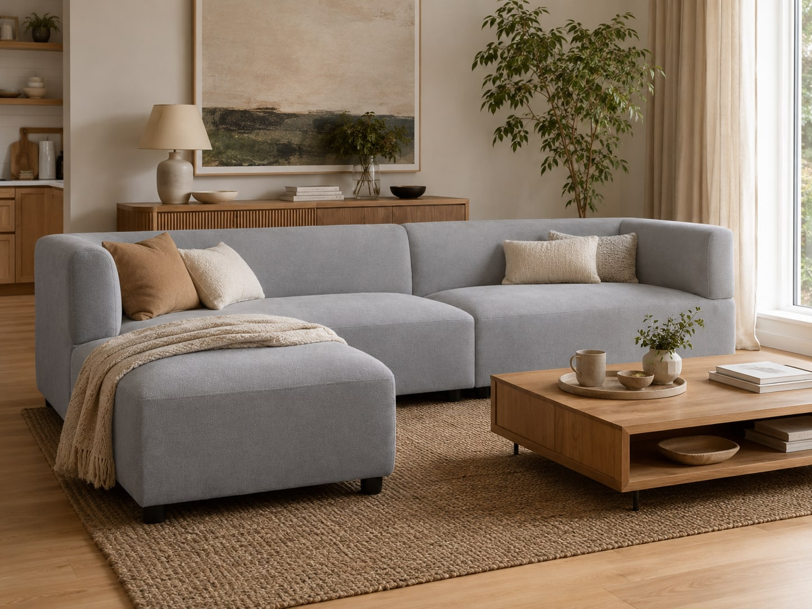
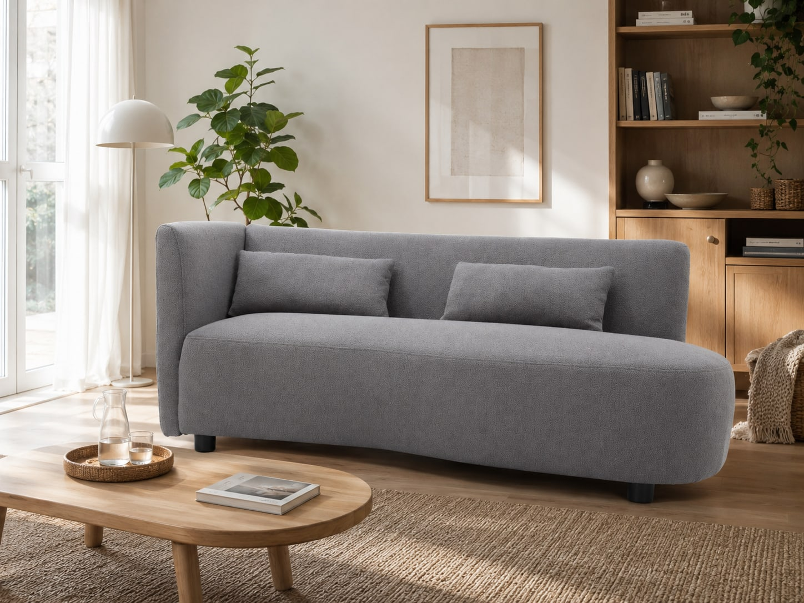
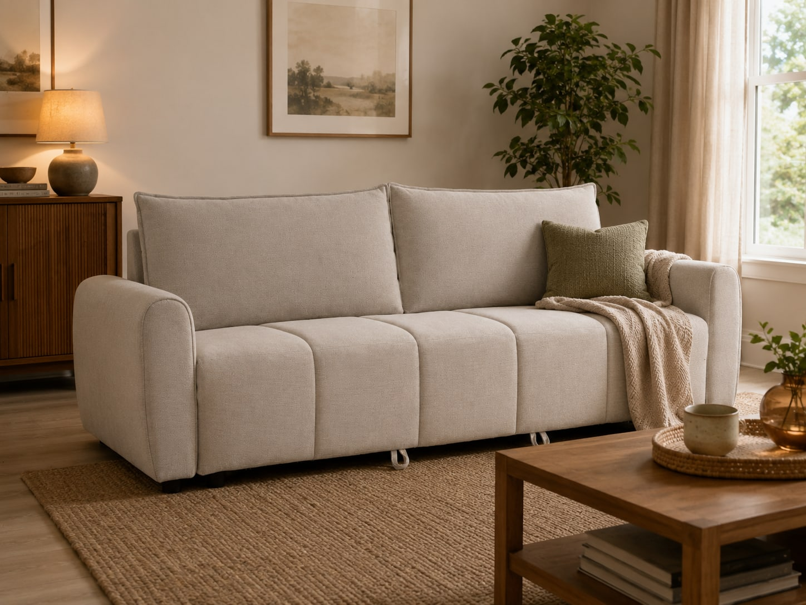
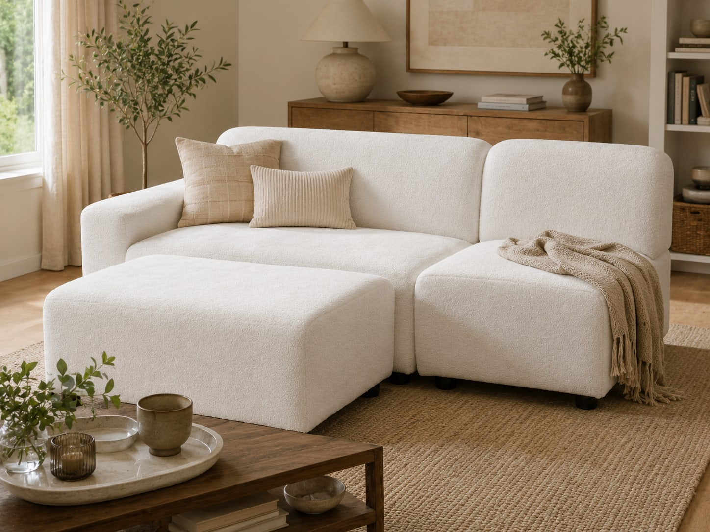

North America
Comfort depth, modular flexibility, performance fabric, and easy home delivery.
- Sectionals and family-scale seating
- Clear flammability labeling preparation
- Retail-friendly replacement components

Global Furniture Intelligence
Practical market observations for furniture retailers, importers, distributors, and project buyers evaluating their next upholstery range.
This page tracks overseas demand signals, product direction, compliance topics, and international trade events. It is designed as a sourcing discussion tool, not a live financial forecast.
Market Pulse
Use these priorities to shape samples, showroom stories, product photography, and assortment discussions for each destination market.
Comfort depth, modular flexibility, performance fabric, and easy home delivery.
Compact proportions, material traceability, repairability, and restrained styling.
Generous presentation, premium texture, hospitality use, and easy-care finishes.
Strong value, durable upholstery, flexible packing, and versatile room placement.
Urban footprints, multifunctional products, lighter visual mass, and flexible use.
Buyer Briefings
Showing all briefings

Rounded edges and relaxed upholstery can make a collection feel current, but buyers still need stable sitting comfort, repeatable sewing, practical packaging, and a silhouette that remains clear in online thumbnails.
Range actionPair one expressive curved model with simpler straight-line options so the assortment offers visual interest without becoming difficult to merchandise.

Sofa beds, storage seating, and adjustable formats are easier to sell when the function can be understood in seconds. Overseas listings should show both the normal sofa position and the converted state without hiding the mechanism.
Range actionPrepare a complete image sequence, mechanism notes, mattress or sleeping-surface details, and a realistic demonstration of how one person operates the product.
Cream, oatmeal, stone, and warm grey remain easy to coordinate across markets. Differentiation comes from visible weave, corduroy ribs, boucle character, piping, quilting, and the balance between seat softness and shape retention.
Range actionPhotograph fabric close-ups in consistent light and offer coordinated color families instead of presenting isolated swatches with no room context.

Buyers compare how easily a model can scale from an apartment arrangement to a larger family or hospitality layout. Loose ottomans, armless units, corners, and chaises should share a clear visual language.
Range actionBuild a module matrix with product codes, connection method, packaging logic, and recommended combinations for small, medium, and large rooms.
Upholstered furniture supplied to the United States falls under 16 CFR Part 1640. Product teams should confirm material testing, permanent certification-label wording, and any additional state-level labeling with the importer before production.
Read the U.S. CPSC guidanceThe EU General Product Safety Regulation strengthens product-safety information, responsible economic-operator details, traceability, and online listing requirements. Documentation should be planned before the product page is built.
Read the European Commission factsheetUK upholstered-furniture requirements remain a separate compliance workstream. Confirm current testing, permanent-label, technical-file, and product-scope requirements with the importer or an accredited laboratory before shipment.
Read the current UK guidanceTerms such as certified wood, recycled content, low-impact material, and responsible sourcing should only be used when the supply chain can support the claim. Product copy, labels, invoices, and certificates must tell the same story.
Review FSC claim guidanceWatch upholstery launches, showroom merchandising, retail price architecture, and the balance between comfort stories and operational features.
Visit the official market siteUse these events to track silhouette, materials, color direction, presentation language, and how premium brands turn design ideas into complete environments.
Follow hospitality, residential development, fit-out demand, specification language, and the product qualities expected for premium regional projects.
Visit the official exhibition siteCompliance notes are general sourcing reminders and are not legal advice. Final requirements should be confirmed with the destination-market importer, testing laboratory, and relevant authority.
Range Review
Share the destination market, retail positioning, preferred construction, upholstery direction, and target product types. The GCSOFA team can shortlist relevant models for a focused B2B discussion.
Contact the team